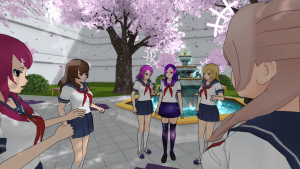

by Stutterguy
LaurenzSide Simulator
Play as Youtuber LaurenzSide in Laurenzside Simulator.
Follow LaurenzSide’s story as she attends Akademi High with her friends and other fellow Youtubers.
This mod was made using Kgftbz’s pose mod. To use it, simply extract all the contents of the file into a folder and run kgftbz_PoseMod.exe. This will start up the game like normal.
The mod starts automatically, however after resetting the day, the mod will need to be reset. To do this, press the ‘X’ key on your keyboard. Navigate to ‘Edit Scene’ and select it with the ‘E’ key, then click on ‘Cutscenes’, and then again on ‘ActivateMe’.
Credit to Kgftbz for his pose mod, and Jeyan for her help with some of the commands. Also, credit to Oka-Senpai for her help with the blossom texture and putting Info-Chan’s glasses on.
To download LaurenzSide Simulator, click the link below.
This mod only works for Windows computers.
This file is large and so may take some time to start downloading. Please wait 5 seconds for the download to start. If you have any issues then please tweet @stutter_guy or email issues@stutterguy.co.uk
As this is a mod, do not report any bugs you find to Yandere Dev unless you can replicate them in a vanilla version of the game.
Edit:
So far I have noticed two errors with this mod. Firstly, there are some spelling mistakes (perhaps I should stop working at 3:00am). Secondly, it is impossible to complete the method in which you kidnap Musume, because the character that is taking her place is a male and cannot be kidnapped.
Perhaps I’ll revise this mod in the future, once I have learnt to implement more things into Yandere Simulator. Overall I don’t think I did too bad for a first mod.